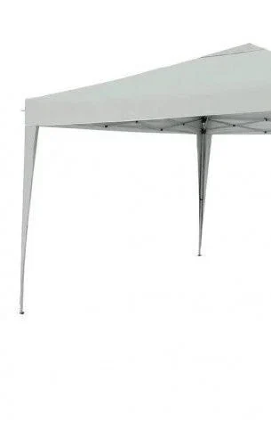

Capas de proteção para piscinas
Lonas de polietileno para reduzir a entrada de folhas, poeira e sujeira. Modelos sob medida e acessórios de fixação sujeitos à consulta.
Capas para piscinas, coberturas térmicas, proteção para áreas de lazer e gazebos. Soluções para distribuidores e compradores B2B.
Lonas de polietileno para reduzir a entrada de folhas, poeira e sujeira. Modelos sob medida e acessórios de fixação sujeitos à consulta.

Coberturas de PVC reforçado e sistemas de fixação conforme dimensões e especificações. Verifique requisitos de segurança aplicáveis ao projeto.

Mantas térmicas com estrutura de bolhas para auxiliar na retenção de calor e na redução da evaporação da água.

Tendas articuladas e paredes laterais para lazer, eventos, jardins e espaços externos, conforme modelos disponíveis.
Informe categoria de produto, medidas, formato, material, espessura, cor, acessórios, quantidades, país de destino e finalidade de uso.
Capas térmicas, capas de proteção e capas de segurança têm funções diferentes. Não presuma capacidade de suportar peso nem segurança contra quedas sem avaliação técnica e certificação aplicável.
Fotografias originais de produtos, sem logotipos. A apresentação é comercial; preços, disponibilidade e condições devem ser confirmados.